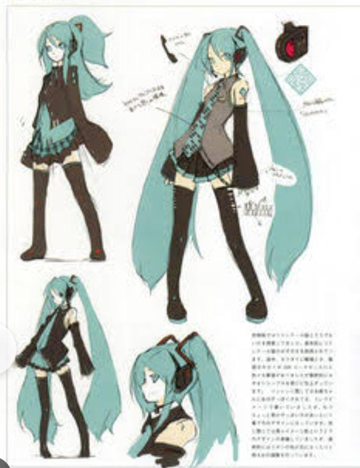
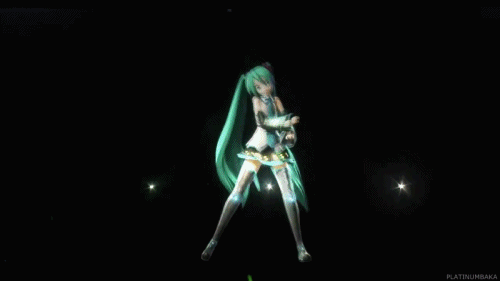

Hatsune Miku foi criada pela Crypton Future Media e lançada em agosto de 2007. Ela foi a primeira Vocaloid da série Character Vocal Series, utilizando a tecnologia Vocaloid 2 da Yamaha. Seu design foi criado pelo artista KEI, e seu nome significa "Primeiro Som do Futuro".
A popularidade de Miku cresceu rapidamente, levando a uma onda de fãs e criadores de conteúdo. Com mais de 100.000 músicas produzidas por fãs, ela se tornou um símbolo da música digital e da cultura otaku.
Miku é conhecida por suas apresentações ao vivo como holograma 3D, utilizando tecnologia de projeção. Desde 2009, ela se apresenta em palcos ao redor do mundo, atraindo milhões de fãs. As apresentações incluem uma mistura de performances ao vivo e produção audiovisual impressionante.
